Hopper打开Thunder迅雷
Hopper Disassembler v4->File->Read Executable to Disassemble:
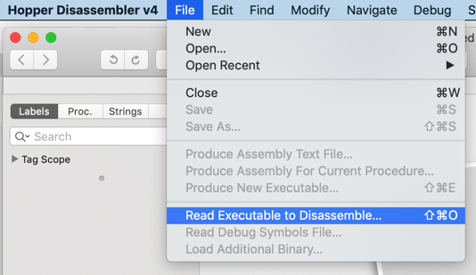
尝试去打开Mac的app：迅雷
Thunder.app/Contents/MacOS/Thunder
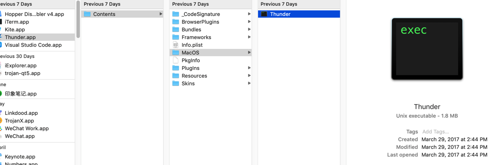
弹框显示加载选项：
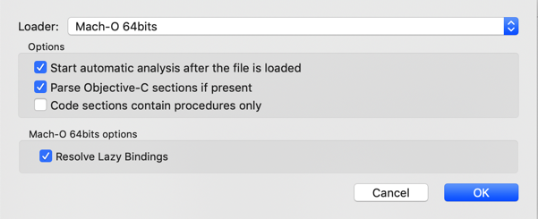
顺带看看Loader参数的其他可选性：
- 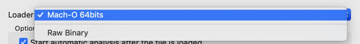
- Loader可选项
Mach-O 64bitsRaw Binary
- Loader可选项
点击OK，即可加载分析：
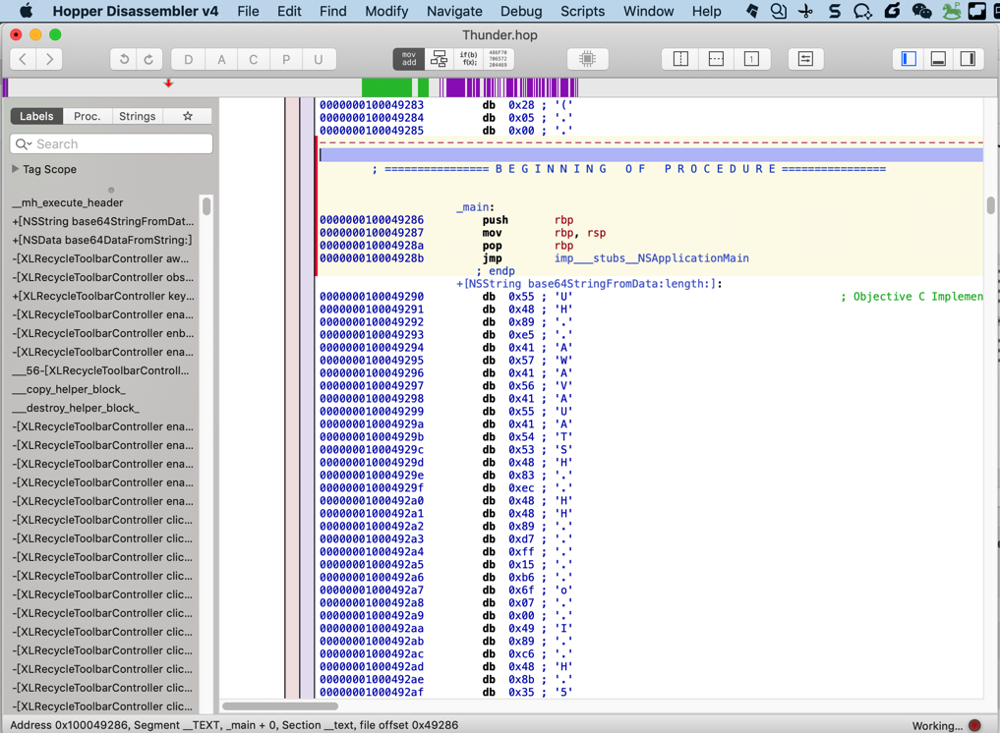
开始加载和分析。很快分析完毕，效果是：
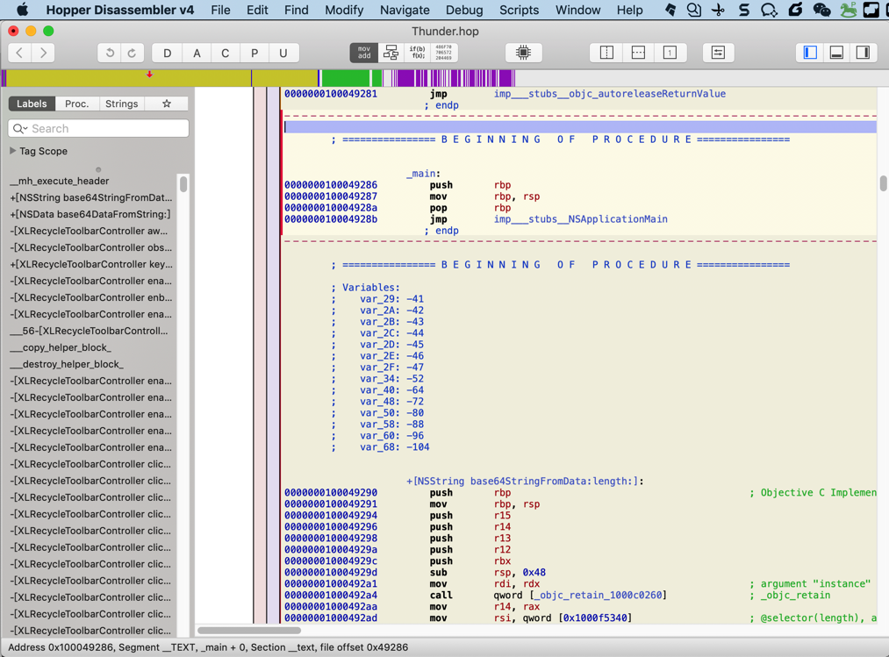
再去把右边和底部也开启显示：
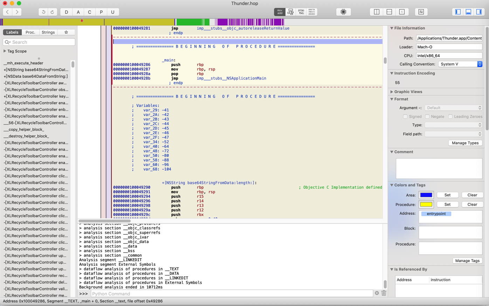
底部的log是：
Hopper is ready
Mach-O 64bits file loaded
Starting background analysis
Analysis segment __TEXT
> analysis section __text
> analysis section __stubs
> analysis section __stub_helper
> analysis section __gcc_except_tab
> analysis section __objc_methname
> transform section __objc_methname to C strings
> analysis section __cstring
> transform section __cstring to C strings
> analysis section __const
> analysis section __objc_classname
> transform section __objc_classname to C strings
> analysis section __objc_methtype
> transform section __objc_methtype to C strings
> analysis section __ustring
> analysis section __swift3_typeref
> analysis section __swift3_reflstr
> analysis section __swift3_fieldmd
> analysis section __swift3_assocty
> analysis section __swift2_types
> analysis section __swift2_proto
> analysis section __swift3_capture
> analysis section __unwind_info
> analysis section __eh_frame
Analysis segment __DATA
> analysis section __nl_symbol_ptr
> analysis section __got
> analysis section __la_symbol_ptr
> analysis section __const
> analysis section __cfstring
> analysis section __objc_classlist
> analysis section __objc_nlclslist
> analysis section __objc_catlist
> analysis section __objc_protolist
> analysis section __objc_imageinfo
> analysis section __objc_const
> analysis section __objc_selrefs
> analysis section __objc_protorefs
> analysis section __objc_classrefs
> analysis section __objc_superrefs
> analysis section __objc_ivar
> analysis section __objc_data
> analysis section __data
> analysis section __bss
> analysis section __common
Analysis segment __LINKEDIT
Analysis segment External Symbols
> mark procedures
Analysis segment __TEXT
> analysis section __text
> disassemble section __text
> searching additional procedures in section __text
> analysis section __stubs
> disassemble section __stubs
> searching additional procedures in section __stubs
> analysis section __stub_helper
> disassemble section __stub_helper
> searching additional procedures in section __stub_helper
> analysis section __gcc_except_tab
> analysis section __objc_methname
> analysis section __cstring
> analysis section __const
> analysis section __objc_classname
> analysis section __objc_methtype
> analysis section __ustring
> analysis section __swift3_typeref
> analysis section __swift3_reflstr
> analysis section __swift3_fieldmd
> analysis section __swift3_assocty
> analysis section __swift2_types
> analysis section __swift2_proto
> analysis section __swift3_capture
> analysis section __unwind_info
> analysis section __eh_frame
Analysis segment __DATA
> analysis section __nl_symbol_ptr
> analysis section __got
> analysis section __la_symbol_ptr
> analysis section __const
> analysis section __cfstring
> analysis section __objc_classlist
> analysis section __objc_nlclslist
> analysis section __objc_catlist
> analysis section __objc_protolist
> analysis section __objc_imageinfo
> analysis section __objc_const
> analysis section __objc_selrefs
> analysis section __objc_protorefs
> analysis section __objc_classrefs
> analysis section __objc_superrefs
> analysis section __objc_ivar
> analysis section __objc_data
> analysis section __data
> analysis section __bss
> analysis section __common
Analysis segment __LINKEDIT
Analysis segment External Symbols
> dataflow analysis of procedures in __TEXT
> dataflow analysis of procedures in __DATA
> dataflow analysis of procedures in __LINKEDIT
> dataflow analysis of procedures in External Symbols
Background analysis ended in 10712ms
显示的是加载和分析的过程。
看到有__swift3_typeref，或许表示此处Mac版Thunder是用Swift写的？
继续看看其他的：
- File Information
- 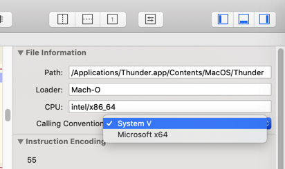
Calling Convention除了System V外还有Microsoft x64
- 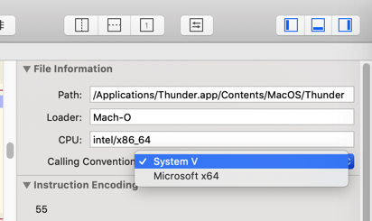
中间部分解析出的内容：
; ================ B E G I N N I N G O F P R O C E D U R E ================
; Variables:
; var_29: -41
; var_2A: -42
; var_2B: -43
; var_2C: -44
; var_2D: -45
; var_2E: -46
; var_2F: -47
; var_34: -52
; var_40: -64
; var_48: -72
; var_50: -80
; var_58: -88
; var_60: -96
; var_68: -104
从Beginning of procedure感觉是：main函数 入口处
看到了，上面就是_main：
; ================ B E G I N N I N G O F P R O C E D U R E ================
_main:
0000000100049286 push rbp
0000000100049287 mov rbp, rsp
000000010004928a pop rbp
000000010004928b jmp imp___stubs__NSApplicationMain
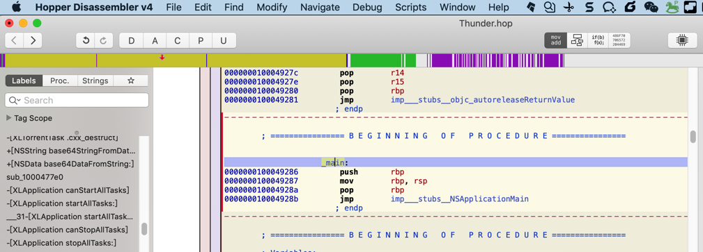
感觉是：Hopper自动帮我们定位到了main入口所在的位置
从main切换到CTF mode，结果显示的内容，很简单：
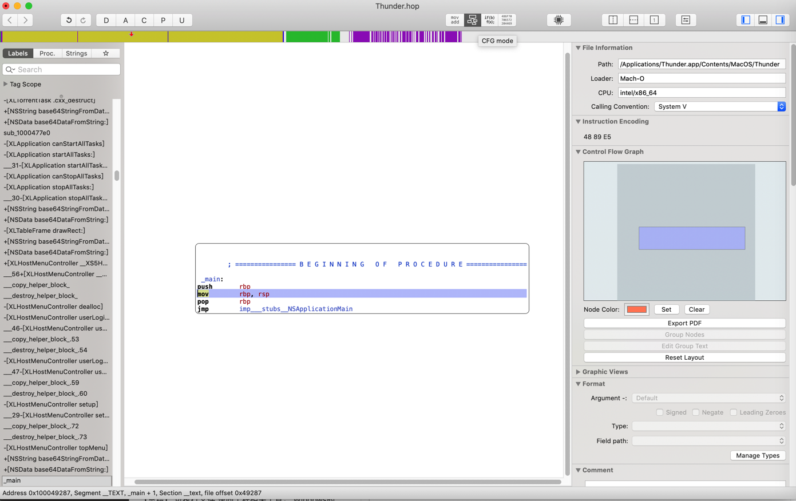
没有我希望的：函数调用顺序
不过后来搞懂了：是此处函数本身简单。
换个下面的函数代码段：
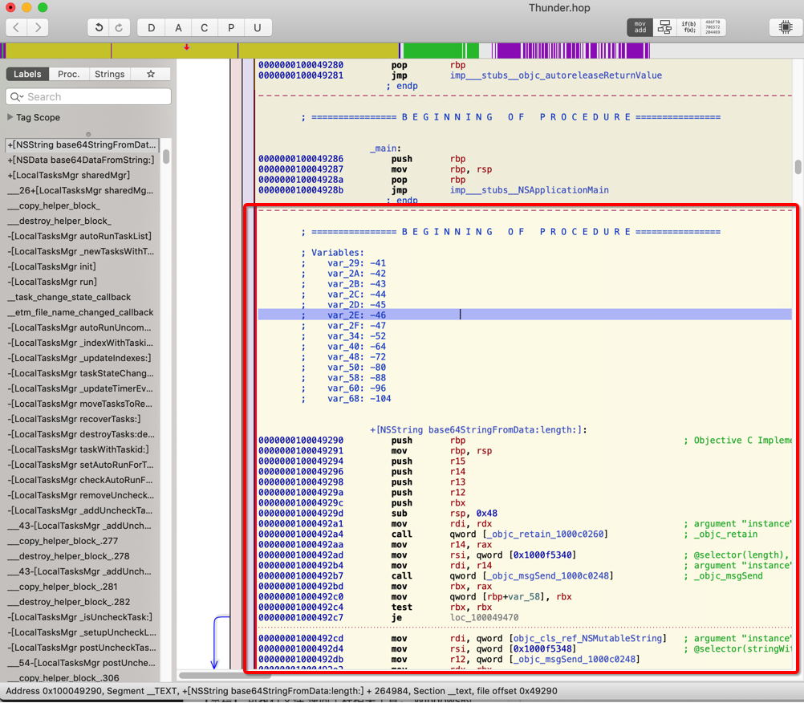
切换到CTF mode后，就可以看到希望看到的：调用关系了：
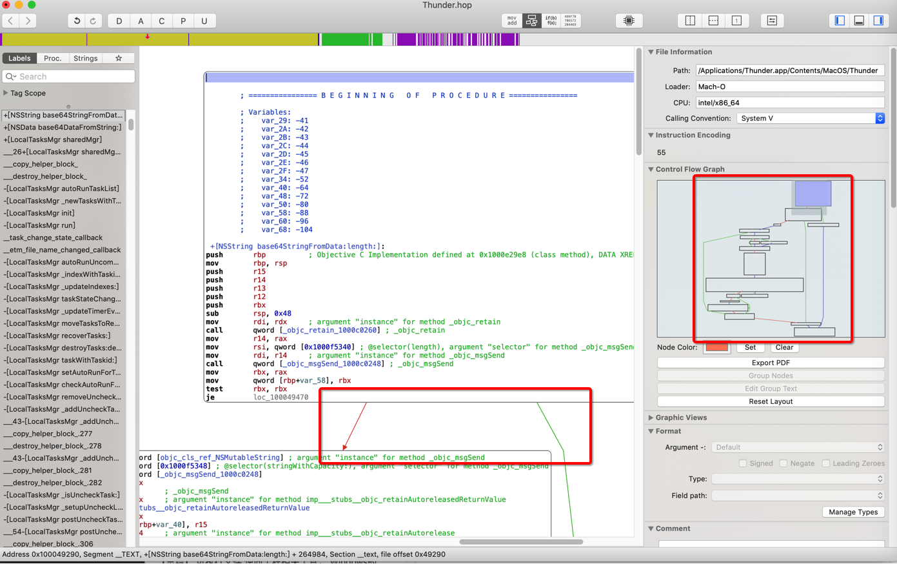
以及右边有Control Flow Graph=控制流程图了
移动后，随时可以看到占整体的比例和位置：
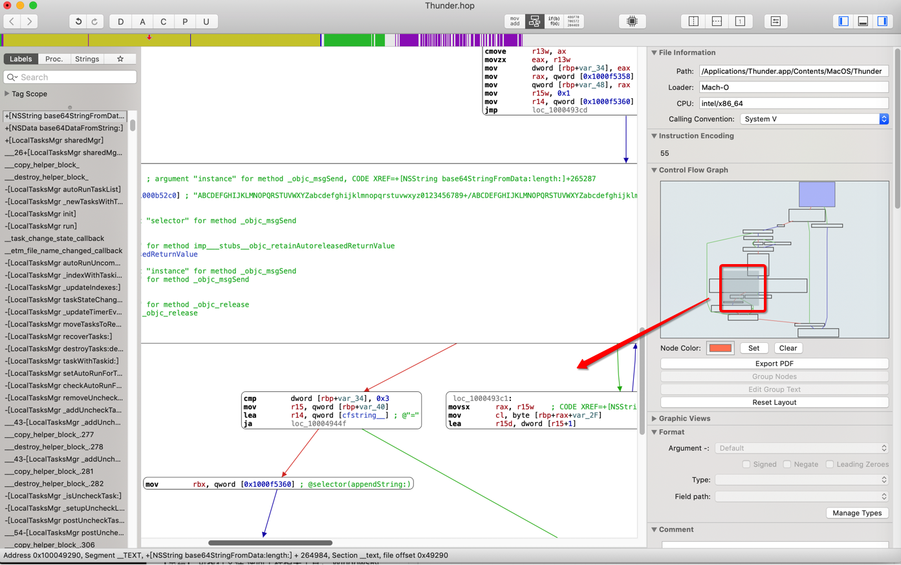
重点再去看看，找找，左边的：
- 函数列表
- Labels
- 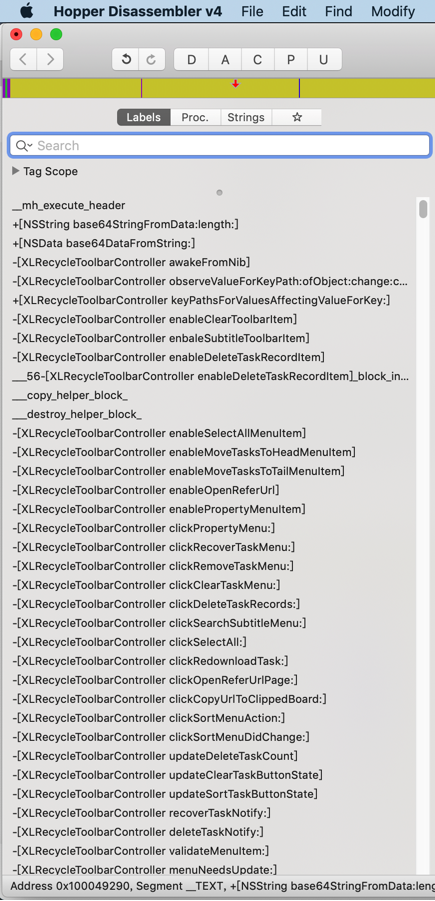
- Proc
- 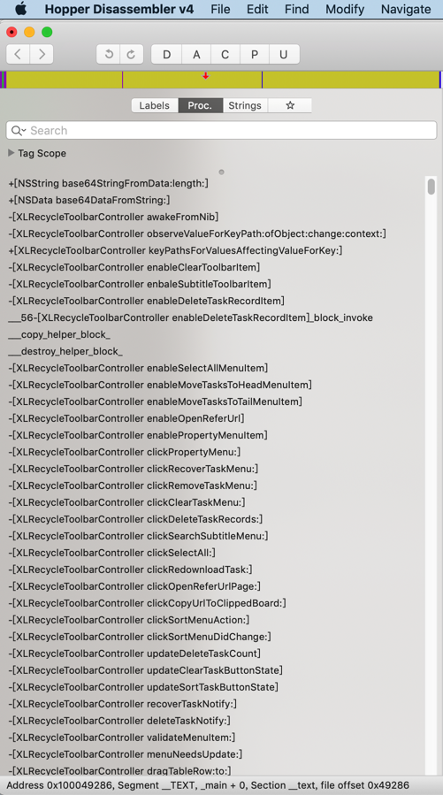
- Strings
- 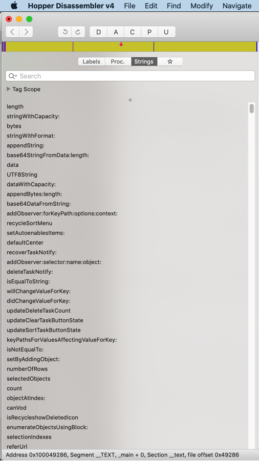
- Labels
继续看看其他的：
点击芯片图标按钮，弹出调试窗口：
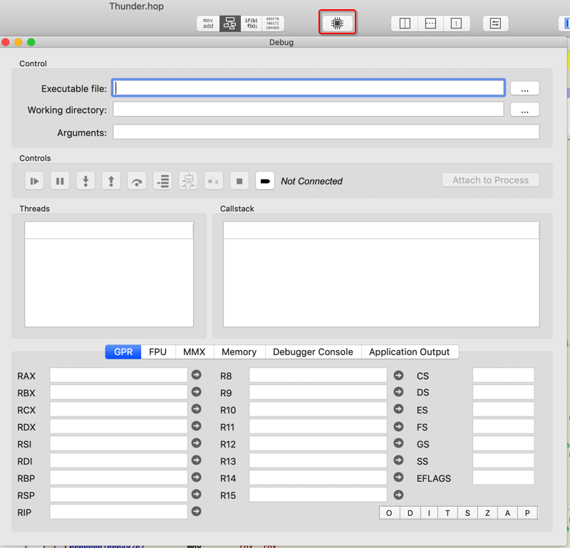